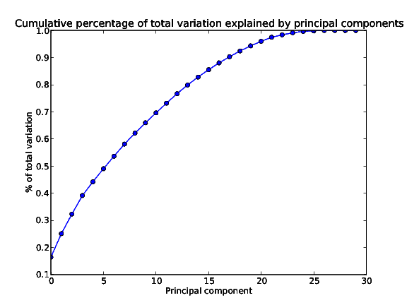
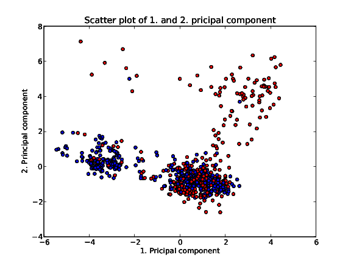
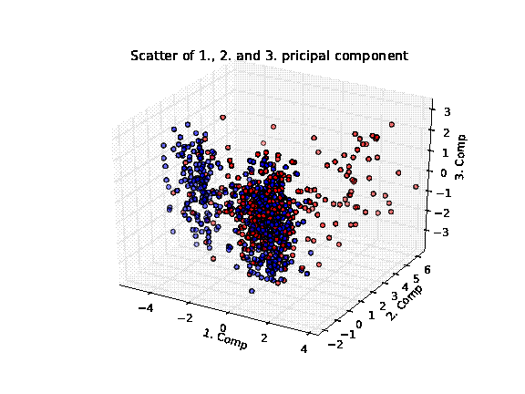

In this session I will create a new PCA, with the data normalized. When the data isn’t standardized, but only mean centered, the features with the numerically largest standard deviation, dominates the pricipal components. One of the results is that a few pricipal components can explain most of the variation. In Session 12: Principal Components Analysis, I found that the first 4 pricipal components explained more than 99% of the total variation. Not very likely in a 30-dimensional dataset.
First the data needs to be normalized. To ensure a decent speed in the following calculations, a script calculates the normalized data set and saves it to disk. That way the data can be loaded pretty fast. The script that creates the data set is shown here
from __future__ import division
import numpy as np
from src.utils import nz
D = np.load('data/fordTrain.npy')
means = D.mean(0)
stds = D.std(0)
cols = nz(stds != 0)[3:]
for i in xrange(D.shape[0]):
D[i,cols] = (D[i,cols] - means[cols])/stds[cols]
np.save('data/fordTrainNormalized2.npy', D)
Now the PCA is calculated. The script is a copy of the script from Session 12: Principal Components Analysis, and is
from __future__ import division
import sys
import json
import matplotlib.pyplot as plt
from matplotlib import pylab
from mpl_toolkits.mplot3d import Axes3D
import numpy as np
from scikits.learn.pca import PCA
from src.data_normalized_2 import DN, L
from src.utils import get_path, bool_to_color
path = get_path(__file__) + '/..'
L = list(L)
rotation_axis = 'x'
rotation_amount = 0
if len(sys.argv) == 3:
rotation_axis = sys.argv[1]
rotation_amount = int(sys.argv[2])
rotation_amount *= 2*np.pi/360
# Remove trial_id, obsnum and is alert
# I change notation here from D to X
X = DN[:,3:]
pca = PCA(n_components=30)
pca.fit(X)
plt.plot(np.cumsum(pca.explained_variance_ratio_), marker='o')
ax = plt.gca()
plt.title('Cumulative percentage of total variation explained by principal components')
ax.set_xlabel('Principal component')
ax.set_ylabel('% of total variation')
plt.savefig('{0}/plots/pca-variation-explained.pdf'.format(path),
papertype='a4', format='pdf')
plt.cla()
W = pca.components_[:,0:3]
X_p = np.dot(X,W)
num_points = 800
rnd_rows = np.random.random_integers(0, X.shape[0], num_points)
colors = map(bool_to_color, DN[rnd_rows,L.index('IsAlert')])
plt.scatter(X_p[rnd_rows,0], X_p[rnd_rows,1], c=colors)
plt.title('Scatter plot of 1. and 2. pricipal component')
ax = plt.gca()
ax.set_xlabel('1. Pricipal component')
ax.set_ylabel('2. Principal component')
plt.savefig('{0}/plots/scatter-principal-components-{1}-points.pdf'.format(
path, num_points), papertype='a4', format='pdf')
plt.cla()
for i in range(2):
rnd_rows = np.random.random_integers(0, X.shape[0], num_points)
colors = map(bool_to_color, DN[rnd_rows,L.index('IsAlert')])
fig = plt.figure()
ax = fig.add_subplot(111, projection='3d')
ax.scatter(X_p[rnd_rows,0], X_p[rnd_rows,1], X_p[rnd_rows,2], c=colors)
plt.title('Scatter of 1., 2. and 3. pricipal component')
ax = plt.gca()
#ax.view_init(30, -60+i*90)
ax.set_xlabel('1. Comp')
ax.set_ylabel('2. Comp')
ax.set_zlabel('3. Comp')
fig.savefig('{0}/plots/scatter-principal-components-3d-{1}-{2}points.pdf'.format(
path,i, num_points), papertype='a4', format='pdf')
pylab.close()
with open('{0}/data/calculated_pca.json'.format(path), 'w') as f:
f.write(json.dumps(pca.components_.transpose().tolist(), indent=4))
From the calculated PCA, a plot of the explained variance is created
This looks a lot more plausible. Now the first 6 principal components are required to explained 50% of the total variation. And about 17 principal components are required to explain 90% of the total variation.
A single scatter plot of the first two principal components is created
At least three clusters can be seen on the plot. One cluster in the upper right with almost exclusively red datarows. A cluster in the lower left with many blue points and some red points. And a cluster in the lower right with a great mix of red and blue points. To get another view on the data, a 3d plot of the first three principal components is created
